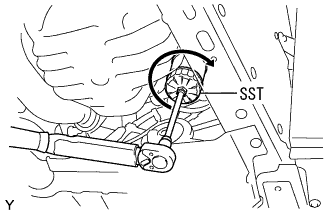
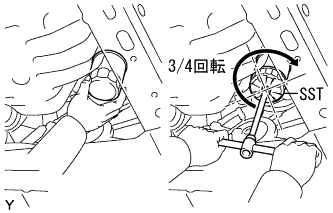
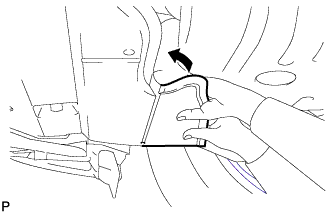

Oil Filter Element (2AZ-FE) Installation |
| 1. Install Oil Filter Sub-assembly |
 |
When using a torque wrench
Remove any dirt and foreign matter from the oil filter installation surface on the engine.
Apply a light coat of engine oil to the O-ring of a new oil filter.
Using SST, install the oil filter.
 |
When not using a torque wrench
Remove any dirt and foreign matter from the oil filter installation surface on the engine.
Apply a light coat of engine oil to the O-ring of a new oil filter.
Tighten it by hand until the O-ring contacts the installation surface.
Using SST, tighten it an additional 3/4 turn.
| 2. Fill Engine Oil |
| 3. Inspect Engine Oil Level |
Warm up the engine, stop it, and after 5 minutes inspect that the oil level is between the L and F marks on the oil level gauge. If the oil level is low, inspect for leaks and add oil up to the F mark.
| 4. Inspect for Engine Oil Leaks |
Start the engine and check that there are no oil leaks from the oil filter and oil pan drain plug joints.
| 5. Install Oil Filter Element Service Hole Cover |
 |
As shown in the illustration, fold the service hole cover toward the top of the vehicle, then unfold the crease.
 |
Install the service hole cover with the clips.